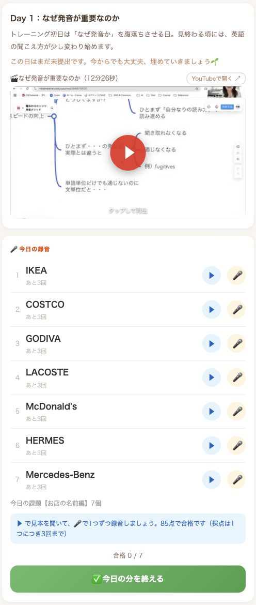
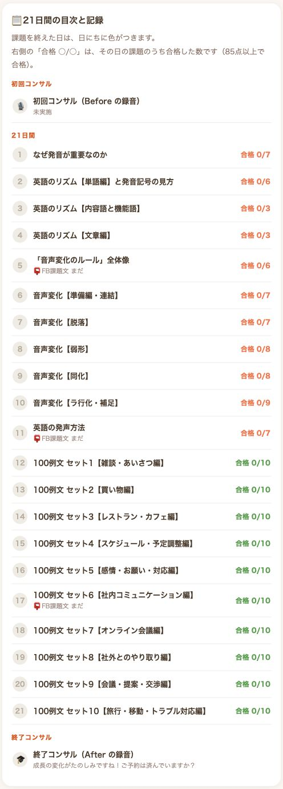

Zさん／海外で仕事をする中で
簡単な指示から、その先の会話へ。
オンライン英会話やシャドーイングなど、いろいろ試しても手応えを感じられず、英語での関係づくりにも不安がありました。
その後、発音やリズムを意識する中で、以前は一度で伝わらなかった相手にも、言葉が自然に伝わる変化を実感。仕事でも、相手の意図を理解し、自分の意見を述べられるようになったと振り返っています。
何年も英語を学んできたあなたへ
自分の発音のズレに気づき、直す。
聞いてわかる、会話につながる。
その土台を一緒に作りませんか？
魔法の10ミニッツ発音メソッド21日間集中オンラインブートキャンプ
1日平均15〜20分／個別コーチング各60分
「10ミニッツ」はメソッド名です。毎日の学習時間は異なります。
YOUR ENGLISH, YOUR NEXT STEP
オンライン英会話。会社の英語研修。AIを相手にする会話の練習。取り組んできたのに、仕事の会話では聞き取れない。
もっと単語を覚えるべきなのか。レッスンの回数が足りないのか。そう考えてきた方へ、まず確かめてほしいことがあります。
頭の中にある英語の音と、
実際に話される音は、同じでしょうか。
英語には、強くなる音、弱くなる音、つながる音があります。一語ずつの音だけを探していると、知っている言葉さえ見つけにくくなります。
まず、つまずく場所を分ける
聞き取りの悩みでも、必要な練習は同じではありません。文字で読んでも意味が分からないなら、単語や文法を補う必要があります。一方、読めば分かるのに聞き取れないなら、音と知識のつながりを確かめる価値があります。
語彙や文法の知識を補う
リズム・音の変化・発声を見直す
会話の中で表現を取り出す
学習課題を整理するための図です。複数が重なることもあります。
このプログラムで集中的に扱うのは、真ん中の「音」の部分。ネイティブのように格好よく話すためだけの練習ではありません。今まで覚えてきた英語を、会話の中で受け取るための土台づくりです。
発音指導を体験した方の声
これまで坪田先生の発音指導を体験した方から、こんな感想をいただいています。
Youtubeなどで練習した事はありますが、段階を踏んで練習すると、こんなにも違って言える様になるのかと嬉しかったです。
英語が聞き取れると、こんなにもワクワク楽しい気持ちになれる。もっと学びたい！
音が聞こえないと思って、自分の耳は人より劣っているかもとオーストラリアで生活する中で常々思っていましたが、音に対する知識と認識が繋がっていないと言うことが分かりました。
そこを改善していけば、相手の言ってることが分かるようになるのかなと思いました。
発音の違いを感じる。聞き取れることを楽しむ。次に取り組むことが見えてくる。欲しかったのは、勉強時間を増やすことだけでなく、こうした手応えではないでしょうか。
過去の発音指導で寄せられた感想です。今回の21日間コースの成果を示すものではありません。変化には個人差があります。
発音は、仕上げではなく土台。
家を建てるなら、土台が整ってこそ、その上に柱や壁を組み上げていけます。英語も、覚えた単語や文法を、実際の音や会話と結びつけることが大切です。
音だけで会話が完成するわけではありません。各要素を結びつけて育てます。
音の土台を確かめる必要がある方が、教材やレッスンを増やすことだけで解決しようとすると、同じつまずきが残ることがあります。
足りないのは、努力とは限りません。今、どこで止まっているのか。そして何を練習し直すのか。そこを具体的にしていきましょう。
学ぶポイントは、3つ。
坪田先生が大切にしてきたのは、リズム・音声変化・発声法の3つ。例えば “must have been” も、会話の中では一語ずつ、同じ強さではっきり聞こえるとは限りません。
どの語を強く、どの語を弱く言うのか。
前後でつながる音、消える音、変化する音。
見本との違いを確かめながら、実際に声に出す。
ただ「もっと真似して」ではなく、どこを聞いて、どこを変えるかを知る。そのうえで短いまとまりから声に出す。録音した自分の音と比べ、指摘されたところを直していくのです。
「聞く」と「話す」は、切り離された働きではありません。音声を聞くときにも発声に関わる脳の領域の一部が活動した研究や、発音のしかたを学んだ後に、一部の音の聞き分けが改善した研究があります。［1］［2］
だから今回は、聞くだけ、話すだけで終わらせず、両方を行き来します。練習した音を別の例文でも確かめ、意味と結びつけ、会話で使う。そのための出発点をつくります。
「自分の場合」に、先生が向き合う。
見本と同じように発音しているつもりでも、自分では気づきにくい、微妙な音の違いがあります。その違いを知らないままでは、直したいところが残ってしまうことも。
そこで、あなたが録音して提出した音声を、坪田先生が直接聞く機会を、全3回設けています。
「あ、この音だったんだ」。曖昧だった違いに気づき、聞き取れる音を少しずつ増やしていく。暗い部屋に一つ、また一つと明かりがともり、見える範囲が広がるようなイメージです。
アプリの点数は練習の参考。先生の役割は、その点数だけでは分からない「どこをどう直すか」を伝えることです。毎日の録音すべてを先生が添削する仕組みではありません。
目指すのは、ネイティブそっくりではなく、相手に伝わりやすい英語。発音指導の研究でも、ネイティブらしさより、相手にとっての理解しやすさで大きな改善が報告されています。［3］
学びを、仕事と日常へ。
ここからは、発音に加えて会話や文章を作る練習にも取り組み、坪田先生の指導を継続して受けた方の体験です。
Zさん／海外で仕事をする中で
オンライン英会話やシャドーイングなど、いろいろ試しても手応えを感じられず、英語での関係づくりにも不安がありました。
その後、発音やリズムを意識する中で、以前は一度で伝わらなかった相手にも、言葉が自然に伝わる変化を実感。仕事でも、相手の意図を理解し、自分の意見を述べられるようになったと振り返っています。
Y.Tさん／海外の同僚とのやり取りで
留学経験も資格もありながら、英語で話すことに不安を抱えていたY.Tさん。練習を重ねる中で、仕事の相談から雑談まで、約40分英語で話す場面がありました。
私こんなに喋れたっけ
ご本人もそう驚き、ジョークで相手が笑ってくれたことも、嬉しい出来事として話してくださいました。
Megumiさん／学習への納得感が変わる
以前の英語学習では、なぜその課題が必要か分からず、続けても変わらないのではと感じていました。
坪田先生の指導では、できていないところを具体的に指摘してもらい、疑問を曖昧にせず学べるように。覚えた表現を友人との会話で使い、相手が喜んでくれた手応えも生まれています。
体験談はご本人の報告をもとに要約しています。継続的な指導の中での変化であり、今回の21日間だけの成果ではありません。成果には個人差があります。
会議でうなずくだけでなく、自分の考えを返す。用件が終わったあと、同僚と少し雑談する。英語を学ぶ理由は、きっと、そうした時間の先にあるはずです。
21-DAY PROGRAM
魔法の10ミニッツ発音メソッド 21日間集中オンラインブートキャンプ。21日間、英語の音の土台づくりに集中するプログラムです。
最初に、坪田先生との1時間の個別コーチングで発音の現在地と目標を確認。翌日から、動画・見本音声・録音練習に取り組みます。
動画時間は会員サイトの表示に基づきます。練習・個別指導等は含みません。課題数は重複を含む出題数で、先生への提出3回は別に用意されています。
DAY 01 — 4
身近な単語から、文章の強弱へ。
DAY 05 — 11
つながる・消える・弱くなる音を、一つずつ。
DAY 12 — 21
日常・仕事・旅行の表現を、1日10例文ずつ。
例えばオンライン会議では、“Can you hear me okay?”（音声、聞こえますか？）、“Let me share my screen.”（画面を共有しますね）など。覚えるだけでなく、その言葉をどんな音とリズムで言うかまで練習します。
その日のページを開いたら、声に出す。
個別のURLから利用する会員サイトに、動画・見本音声・練習課題・進み具合がまとまっています。

平均の目安は、1日15〜20分。日によって動画の長さや課題数は違い、繰り返し練習する方はもう少し時間がかかります。
「10ミニッツ」はメソッド名であり、毎日の学習すべてが10分で終わるわけではありません。声を出せる時間を、生活の中に確保してください。

教材 ＋ 坪田先生の個別指導
日々の取り組みを応援するLINEメッセージも、1日1通お届けします。操作方法などで困ったときはLINEへ。学習の質問は、基本的に課題フィードバックの中で扱います。
最後のコーチングでは、取り組みを振り返り、今後も意識したいポイントを確認します。21日間で学習を終えるのではなく、その先の単語・文法・英会話につなげます。
あなたの音に向き合う講師
英語のパーソナルトレーナー
コーチ・コンサルタント
魔法の10ミニッツ発音メソッド開発者
一人ひとりに必要な学びを、
一緒に見つけていく。
講師歴25年以上、のべ4,000人を指導。米国で4年間学び、現地のITベンダー・旅行会社で1年間勤務した経験を持ちます。
GEOS・ベルリッツ、English Company・STRAILなどで英語指導を担当。JT・シャープなどの企業研修、同志社大学・京都女子大学などでの指導にも携わってきました。
大切にしているのは、第二言語習得研究に基づいて「今、どこでつまずいているか」を見つけること。一人ひとりのレベルや目標に合わせ、何をどう練習するかを具体的に伝えます。
目指すのは、指導を受けている間だけ頑張れる状態ではありません。自分の課題が分かり、必要な学習を選び、修正しながら学び続けられること。その先まで見据えてサポートします。
本プログラムの個別コーチングと音声フィードバックは、坪田先生本人が担当します。
21日間で終わらない、学び方を。
英会話がテニスの練習試合だとしたら、毎回同じミスが出るときには、打ち方を取り出して練習する時間も必要です。実戦と基礎練習は、どちらか一方ではありません。
英語も、音を確かめ、意味と結びつけ、会話で使う。使えなかったところは、また練習する。このつながりをつくることで、これまでの勉強を生かしていきます。
一度に詰め込むより、間隔を空けて練習する。第二言語学習の研究でも、分散して取り組む練習の効果が報告されています。［4］今回も、一度見て終わりにせず、学んだ音を翌日以降の例文や繰り返しの練習で確かめていきましょう。
朝食のあと、あるいは仕事を終えてひと息ついた時間。生活に合うタイミングを決め、自分の課題を確かめる学習を組み込んでみてください。
習慣になるまでの時間には個人差があります。この21日間は、その後も学び続けるための足場をつくる期間です。
21日間、あなたの音と向き合う。
比べていただきたいのは、動画1本あたりの値段や、レッスン何回分という数字だけではありません。
どこが違うか分からないまま練習するか。
一度、先生と確かめてから進むか。
最初に現在地を確認し、21日間、音の土台に集中する。途中で3回、あなたの声を先生が聞き、最後にその先の学習を考える。「自分は、どの音をどう練習するか」を具体的にしていくための投資です。
魔法の10ミニッツ発音メソッド
21日間集中オンラインブートキャンプ
49,800円（税込）
一括払いのみ／分割なし
会員サイトの閲覧は、初回コーチング実施後から30日間。毎日の学習は平均15〜20分が目安です。
受講条件を確認する ↓英語を学ぶ価値は、仕事や収入だけでは測れません。海外の同僚と、用件の先の話をする。旅先で、もう一つ質問してみる。そうした経験の選択肢を広げることにも価値があると、僕は考えています。
10年後、20年後にも、英語を使って楽しみたいことはありませんか。ここでつくる土台を、その後の学習と会話で育てていく。今の苦手を見直すだけでなく、その先の「やってみたい」への一歩にしてください。
一人ひとりを見るための、20名。
坪田先生が一人ひとりの音声を聞き、個別コーチングにも向き合う。そのため、1回あたりの募集は20名までとしています。いつでも、何人でも受け入れる教材販売ではありません。
早くお申し込みいただいた方には、個別指導の機会を追加します。
終了後コーチング 90分
初回は60分
個別コーチング 各60分×2回
個別コーチング 各60分×2回
先着3名は両方の特典が対象。それ以外の方も、通常コースの教材とサポートはすべて受けられます。
今の自分に必要な取り組みか。声を出して練習する時間をつくれるか。その点も含めて、ご検討ください。
制作確認：先着判定方法・特典の提供条件・先生の対応枠・募集締切は、販売開始前に確定します。
受講開始までの流れ
案内に沿って初回コーチングの日程を調整します。
プログラムの進め方を確認します。
先生と1時間、発音と目標に向き合います。
動画・練習と、所定の3回の音声提出に取り組みます。
日程を調整し、今後の学習につながるポイントを確認します。
受講前に、確かめたいこと。
英語レベルは問いません。知っている言葉が聞き取れない、同じ言葉を聞き返されるなど、音の土台に課題がある方が対象です。初回の個別コーチングで、現在地と目標を確認します。
音の課題がなく、別の分野の学習を必要としている方へ、無理におすすめするものではありません。
このコースは、あらゆる会話を21日間で完成させるものではありません。聞き取れない音や伝わりにくい発音を見直し、その先の学習を進める土台づくりを目指します。語彙・文法・会話の練習も引き続き必要です。
真似することも練習の一部ですが、「似せたつもり」で終わらず、どこに違いがあるかを確かめます。提出した音声への先生の指摘をもとに、練習し直せることを大切にしています。
アプリは初回コーチング実施後から30日間、閲覧できます。購入日から30日間ではありません。学習は平均15〜20分が目安ですが、日ごとの内容や繰り返しの量で変わります。無期限の教材ではないため、この期間に取り組む時間をご用意ください。
毎日の録音はアプリの採点を参考に練習します。先生が直接確認する音声課題は通常全3回（先着10名は計4回）です。学習の質問は基本的に課題フィードバック内、操作方法などの不明点はLINEで受け付けます。無制限の学習チャットではありません。
49,800円（税込）の一括払いのみで、分割には対応しません。お客様都合のキャンセル・返金はお受けしない方針です。返金保証はありません。法令上認められる権利を妨げるものではありません。
制作確認：正式な契約条件・決済方法・特定商取引法に基づく表記との整合は、販売開始前に確認します。
最後に、坪田先生からあなたへ。
英語って楽しいし、会話ができると世界が想像以上に広がるんですよ。
英語が少しできるようになるだけで、いろいろな人やものとのつながりが増える。その楽しさを、あなたにも知ってほしい。それが、私がこのメソッドをお伝えしている理由です。
あなたが英語を学び始めたとき、その先には、何をしたいという思いがありましたか？
仕事で、自分の考えを伝えたかった。海外で暮らすことに憧れていた。旅先で、その土地の人と話してみたかった。
きっと、単語帳を何冊も終わらせることや、問題集で正解することだけが目的ではなかったはずです。
英語を学ぶことの、その先にあるもの。私は、そこに向かって進んでほしいんです。
ここまで読んでくださったあなたは、これまでにも、たくさん努力してきたかもしれません。それでも聞き取れない、言葉が出てこない。そんな経験を重ねてきたのかもしれません。
ここで、一つお伝えしたいことがあります。
英語学習に近道はありません。でも遠回りはいくらでもあるんです。
ただ時間をかけるだけでなく、今の自分には何が必要なのかを知り、そこに合った練習をしていく。そのために、一度、自分の音を確かめてみませんか。
今回の21日間で取り組むのは、英語のすべてではありません。聞き取りや会話を支える、発音の土台を整えることです。
見本を聞いて、声に出して、録音する。提出された音声は、私が聞き、見直すポイントをお伝えします。一緒に確かめながら、練習を進めていきましょう。
「良いことを知った」で終わらせず、あなた自身の声で、実際に取り組んでみる。その一歩を、ここから始めていただきたいんです。
英語の勉強を続けるためだけではなく、英語を使って、やりたかったことに近づくために。
あなたの英語の先にある「夢」を、憧れのままにしないでほしい。そのための土台づくりを、私にお手伝いさせてください。
魔法の10ミニッツ発音メソッド 21日間集中オンラインブートキャンプで、あなたと一緒に取り組めることを楽しみにしています。
坪田真弓
21日間で、その先の英語へ。
魔法の10ミニッツ発音メソッド 21日間集中オンラインブートキャンプ
49,800円（税込・一括）／1回の募集につき20名まで
現在、お申し込み・決済は受け付けていません。募集日程・申込先・正式な契約条件が確定した後、受付導線を設置します。
以下は一般的な研究の紹介であり、本コース自体の効果を実証するものではありません。
Nature Neuroscience, 7, 701–702. 10人を対象とした脳画像研究で、音声知覚と発声時の運動領域の一部に活動の重なりが見られました。「発音できない音は絶対に聞けない」「発音練習だけで理解できる」と証明したものではありません。
Journal of Academic Language and Learning, 9(1), A1–A17. アラビア語母語の大学生を対象とした、特定の音の識別実験。発音指導後に一部の音で改善が報告されましたが、改善が確認されなかった音もあります。日本人の会話全般を検証した研究ではありません。
TESOL Quarterly, 55(3), 866–900. 発音指導のメタ分析では、ネイティブらしさより理解しやすさで大きな改善が報告され、とくに韻律を扱う指導でその傾向が明瞭でした。相手が学習者の発話を理解しやすいかについての研究であり、学習者自身のリスニング力の改善率ではありません。
Language Learning, 72(1), 269–319. 48実験・計3,411人のメタ分析で、間隔を空けた練習に中〜大程度の効果が報告されています。効果は学習内容や条件で異なり、「21日が最適」「21日で必ず習慣になる」と示した研究ではありません。